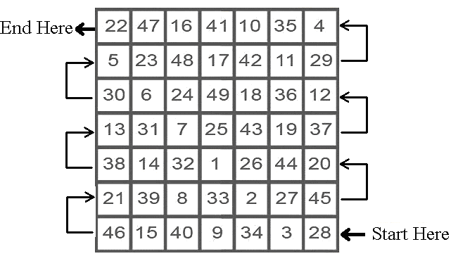
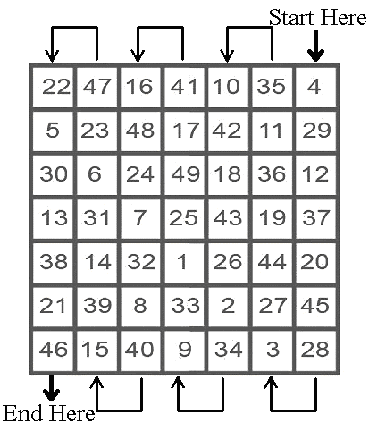

Kabalistic/Magickal Square of Venus for empowering chakras, strengthening a debilitated Venus, and for help in health and overall spiritual advancement related to Venus


Kabalistic/Magickal Square of Venus for material success, prosperity, and earthly [non-spiritual] affairs

The mantra for Venus is for 49 days in a row. It is important never to skip any days, as this will cancel out the entire work.
Begin the mantra when Venus is strong in its home signs of Taurus or Libra, or when it is in its exalted sign of Pisces.
DO NOT begin this mantra when Venus is in the signs of Virgo [its fall] or Scorpio or Aries [its detriment].
Begin the mantra on a Friday during the hours of Venus.
Ideally, each day, the mantra chosen for Venus should be recited during the hours of Venus for that day. This is ideal, but regardless never skip any days, regardless of the hour.
Ritual/Magickal Rulerships for Venus:
Money [lesser than the Sun], jewelry, ornaments, beautiful clothing, and decor.
Social activities, art, beauty, luxury, pleasure, comfort, sexual intercourse with
love and affection, dancing, singing, acting, cosmetics, hairdressing,
cosmetology and glamour. Venus rules the women in a Man's chart, along with
the Moon.
Parts of the Body ruled by Venus: The throat, the thyroid gland, the voice, the sense of touch, and the kidneys. Also the hair and skin in the cosmetic and beauty sense.
Diseases: Blood impurities that poison the system, tonsillitis, measles, smallpox, kidney disease, venereal diseases.
Professions: Ambassadors of peace, artists, musicians and poets, acting, theatre careers, cosmetologists, clothing designers, entertainers, interior decorators, jewelers, botanists and creators and composers of beauty.
In your astrology chart: The house Venus is posited in, along with the houses that have the signs of Taurus and Libra on the cusps.
The Kabalistic/Magickal planetary square working empowers the heart chakra, strengthens a weakened/debilitated Venus in one's astrology chart, and helps in the affairs ruled by the houses with the signs of Taurus and Libra on the cusps and the house containing Venus.
MANTRA FOR VENUS:
AUM DRAAM DRIM DRAUM SAU SHUKRAYA NAMA
One can replace with NAMA with SVAHA ٠ [S-V-AH-HAH]٠ when working for
spiritual goals
Pronunciation:
AHH-UUU-MMM ٠ DD-RAH – AHMM ٠ DD-RR-EE-MM ٠
DD-RR-AHH-UUU-MM ٠ SAH-UUU ٠ SHH-UUU-KKK-RR-AH-YAH ٠
NAH-MAH
AH rhymes with Saw ٠ UUU rhymes with Too ٠ All R's need to be rolled
© Copyright 2011, Joy of Satan Ministries;
Library of Congress Number: 12-16457
Back to Kabalistic/Magickal Squares Main Page
BACK TO SATANIC POWER MEDITATION MAIN PAGE